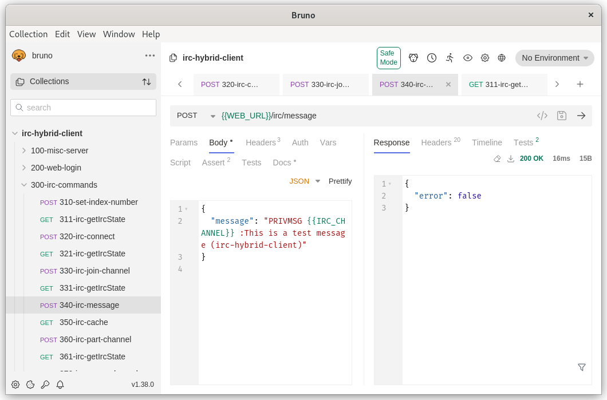

Generally, the browser communication is split. Messages from the web server to browser are passed over the websocket as RFC 2812 IRC server messages. In the reverse direction, no messages are passed from the browser to web server over the websocket. All messages from the browser to the web server are passed over a web API using POST and GET requests. More specifically, IRC server messages (such as PRIVMSG) are passed over the /irc/message route as UTF-8 strings using a POST web API request. Information related to the state of the IRC connection and channel membership are retrieved as needed by issuing a GET request to the web API.
The web browser IRC client operates on IRC messages received from the backend NodeJs web server. These are RFC 2812 standard IRC messages. Some non-standard (outside RFC 2812) messages are passed over the websocket for control purposes as described below.
In most cases, the API requests return a HTTP response showing the asynchronous request was either accepted or caused an error. The API response body contains an error boolean flag within a JSON object.
General state errors, such as IRC Server not connected
are returned
within API response body with status 200 and description of the error as a JSON object.
Data validation or parsing errors are returned as status 400 Bad Request.
Network connection errors occurring with the IRC server connection between NodeJs backend and IRC server
are returned in the websocket stream prefixed with the string value webError:
.
Errors occurring over IRC network are returned within the websocket stream as standard IRC RFC 2812 messages containing 3 digit numeric code and descriptive string.
Example (generic) API Responses for successful API request:
{
"error": false
}
Example (generic) API Responses for a miscellaneous state error:
{
"error": true,
"message": "IRC server not connected"
}
Websocket IRC server messages are formed by prefixing a timestamp in front of of verbatim RFC 2812 IRC server message delimited by end-of-line characters. Due to the nature of a text stream buffered I/O, it is possible that the one buffer of stream data could contain multiple IRC messages or that a single IRC message could be split, half arriving in one buffer and half in the next buffer. For reference, RFC 2812 can be viewed at https://datatracker.ietf.org/doc/html/rfc2812.
@time=2021-06-18T21:13:06.949Z :myNickName!*@* PRIVMSG #mychannel :Hi, i'm typing a IRC channel message
Example Websocket Message (generic) for a network connection error being returned asynchronously over websocket stream:
"webError: IRC server timeout while connecting"
Example Websocket Message (generic) for general info messages over the websocket:
"webServer: Opening socket to test-server 192.168.1.127:6667"
A more detail description of web socket usage is included near the bottom of this page.
API Authorization
Cookies
HTTP requests to the web server API require a non-expired session cookie with a valid digital signature. API requests made to any protected API without a valid cookie will return status 403 Forbidden.
Irc-hybrid-client is a single page web application located at /irc/webclient.html
.
When visiting the page, the web server will check for a valid cookie.
In the case of a missing, invalid or expired cookie, the user's web
browser is redirected from /irc/webclient.html to /login
page where the user can enter their username and password..
After successful password entry, the browser is redirected back
to /irc/webclient.html with a new valid cookie.
CSRF Tokens
Cross site request forgery is a security concern where html <form> elements are used to submit data using the form's submit button with method POST. A malicious page would attempt to trick a user to clicking an embedded form causing data to be submitted to a different web site where the user previously obtained a valid cookie. A CSRF token is a random nonce that is embedded into the HTML of a web page. It changes each time the page is reloaded to a new random value.
The hrc-hybrid-client web server requires CSRF tokens for HTTP methods that change state, such as the POST methods. The CSRF token is obtained by using JavaScript to parse the token data from the HTML code in /irc/webclient.html as shown in this example.
<head>
<meta name="csrf-token" content="ob1P2QF3-bBXabc8At9xxiJyC2I44sAbjgsA">
</head>
When performing a HTTP request using the POST method, the CSRF token can be added to the request headers as follows:
"accept": "application/json", "csrf-token": "ob1P2QF3-bBXabc8At9xxiJyC2I44sAbjgsA", "content-type": "application/json",
Requests with missing or invalid CSRF tokens will return 403 Forbidden invalid csrf token
IRC Client API Routes
POST /irc/server
The backend NodeJs web server maintains a list of available IRC servers.
This list is loaded from a configuration file servers.json
.
Calls to /irc/server shall include an index
property of type integer
that is used to select a specific server.
- A value of 0 or greater is used to select a specific index number for an IRC server in the list.
- A value of -1 is used to rotate to the next server in the configuration.
- A value of -2 is used to rotate to the previous server in the configuration.
In the case where the change in selected IRC server causes a change in IRC server group number,
or if the requested IRC server number is equal to zero, the IRC message cache
on the web server will be cleared. The web server will then send a
CACHERESET
command to all connected web browsers over the websocket connection.
The web browser will interpret this command as a change in IRC networks.
The browser will clear all relevant textarea elements in order to prevent previously received
messages on one IRC network from being displayed as if
they were received from a different IRC network.
In the case where more than one web browser is concurrently connected to the
web server this will force all connected web browsers will remain synchronized
with the empty message buffer on the web server.
When the web server configuration changes the index to point to a different IRC server, an "UPDATE" command is sent to the browser over the websocket stream. Upon receipt of the UPDATE request, the browser should perform a GET request to route /irc/getircstate. The getircstate response contains updated server configuration in JSON format. (see getircstate below)
POST Request Body:
{
"index": -1
}
Success Response:
{
"error": false,
"index": 2,
"name": "DALnet"
}
Error Response:
{
"error": true,
"message": "Requested server index number out of range."
}
POST /irc/connect
Calls to the Connect API are used to request the backend NodeJs web server to initiate an IRC client connection to the IRC server. The nickName and realName are required properties of type UTF-8 string. The IRC user name (identd alternate user) is not editable from the browser and therefore excluded from this schema. The initial userMode property is optional.
Connection to an IRC server involves several steps, such as opening a TCP socket, sending commands to set nickname and other IRC information. As the connection is established, the irc state object located in the web server is updated. Each time the state changes, an "UPDATE" command is sent to the browser over the web socket stream. Upon receipt of the UPDATE request, the browser should perform a GET request to route /irc/getircstate and update the user interface from information returned in the state object. (see getircstate below)
POST Request Body
{
"nickName": "myNickName",
"realName": "John Doe",
"userMode": ""
}
Success Response:
{
"error": false
}
Error Response:
{
"error": true,
"message": "Error: already connected to IRC server."
}
POST /irc/message
Calls to the Message API are used to send RFC 2812 IRC messages from web browser to the NodeJs backend server for re-transmission to the IRC server.
The request body should contain a message
property of type UTF-8 string
containing the RFC 2812 IRC message.
Multiple messages are not allowed. The end-of-line characters should not be included.
Assuming the IRC command is accepted by the IRC server, the IRC response is
sent to the browser via the websocket stream as a standard RFC 2812 IRC message.
These messages are UTF-8 text and delimited by return and end-of-line
characters 0x10 and 0x13 (\r\n
). See RFC 2812 for specification of these messages.
Issuing some commands to the IRC server may result in a state change of the IRC client. One example would be a command to JOIN an IRC channel. Some commands, such as PRIVMSG may not cause a state change. Each time the state changes, an "UPDATE" command is sent to the browser over the web socket stream. Upon receipt of the UPDATE request, the browser should perform a GET request to route /irc/getircstate and update the user interface from information returned in the state object. (see getircstate below)
POST Request Body:
{
"message": "PRIVMSG #mychannel :Hello World"
}
Success Response:
{
"error": false
}
Error Response:
{
"error": true,
"message": "Can not send server message when IRC server not connected"
}
Websocket Response (IRC server PRIVMSG message in stream)
@time=2021-06-18T20:09:38.944Z :myNickName!*@* PRIVMSG #test :hello, how are you
Example Request causing IRC server to issue an error as IRC message by sending invalid server name with TIME request.
{
"message": "TIME invalid.server.name"
}
Websocket Error Response (IRC server 402 error message in stream)
@time=2021-06-18T20:05:26.538Z :irc.example.com 402 myNickName invalid.server.name :No such server
GET /irc/getircstate
The actual IRC client is located within the NodeJs backend web server. This is a remote client, not an IRC proxy. API calls to route /irc/getircstate will retrieve a JSON object containing all relevant state information for the IRC client connection and IRC channel membership.
The web browser should listen for a websocket stream message containing a string matching UPDATE
.
When an UPDATE is received as a single line message delimited by 0x10,0x13, (...\r\nUPDATE\r\n...)
the browser javascript should fetch a GET request to the /irc/getircstate route.
The browser should then parse the state object for changes and update the user interface as needed.
This example shows the websocket stream during a conversation between two people, while a third new person joins the channel. The IRC server sends a JOIN message which is passed through to the browser. In the backend NodeJs web server, the new user nickname is added to the list of channel members. The UPDATE command is sent to the browser in the websocket stream.
Websocket stream showing JOIN to channel and UPDATE command.
@time=2021-06-18T21:13:06.949Z :myNickName!*@* PRIVMSG #test :Hello, how are you doing @time=2021-06-18T21:14:16.322Z :otherName!*@* PRIVMSG #test :I am doing fine, how are you @time=2021-06-18T21:15:26.412Z :myNickName!*@* PRIVMSG #test :I am fine also, I have to run @time=2021-06-18T21:16:03.212Z :otherName!*@* PRIVMSG #test :OK, bye for now @time=2021-06-18T21:21:11.393Z :Mary!newuser@1.2.3.4.example.net JOIN :#MyChannel UPDATE @time=2021-06-18T21:22:20.433Z :myNickName!*@* PRIVMSG #test :Hello Mary, how are you doing?
The browser should act on the UPDATE command by obtaining a new state object which contains an updated array containing channel member nicknames.
API response to GET /irc/getircstate
{
"ircConnectOn": true,
"ircConnecting": false,
"ircConnected": true,
"ircRegistered": true,
"ircIsAway": false,
"nickRecoveryActive": false,
"userHost": "~someuser@somehose.example.net",
"connectHost": "~someuser@somehose.example.net",
"lastPing": "0.022",
"ircSockInfo": {
"encrypted": true,
"verified": true,
"protocol": "TLSv1.3"
}
"ircServerIndex": 0,
"ircServerGroup": 0,
"ircServerName": "freenode",
"ircServerHost": "chat.freenode.net",
"ircServerPort": 7000,
"ircTLSEnabled": true,
"ircTLSVerify": true,
"ircProxy": false,
"ircAutoReconnect": true,
"ircServerRotation": true,
"nickName": "myNickName",
"userName": "myNickName",
"realName": "myNickName",
"userMode": "+i",
"channelList": [],
"ircServerIndex": 3,
"ircServerPrefix": "tildes.freenode.net",
"channels": [
""#mychannel"
],
"channelStates": [
{
"name": "#mychannel",
"csName": "#MyChannel"
"topic": "Welcome to #MyChannel cool topic message",
"names": [
"@myNickName",
"@otherName",
"Mary"
],
"joined": true,
"kicked": false
}
],
"enableSocks5Proxy": true,
"socks5Host": "socks5.example.com",
"socks5Port": 10080,
"progVersion": "0.2.8",
"progName": "irc-hybrid-client",
"times": {
"programRun": "1624047717",
"ircConnect": "1624047739"
},
"count": {
"ircConnect": 1,
"ircConnectError": 0,
"ircStateCalls": 20
},
"websocketCount": 1,
"disableServerListEditor": false,
"customBeepSounds": false
}
POST /irc/prune
The Prune API is used to remove a non-joined IRC channel from the active channel list. Trying to prune a channel while present in the channel will cause an error. Pruning a channel will delete the IRC message cache buffer associated with the pruned channel. In the case where the maximum count of IRC channel message buffers was exceeded, the prune function will erase channel messages from the default IRC message cache.
The request body shall contain the property channel
of type string
containing the channel name.
POST Request Body
{
"channel": "#test"
}
GET /irc/cache
The web server maintains a cache of IRC server messages messages (lines of text) in RFC 2812 format. Performing a GET request to /irc/cache will return a response containing and array of elements of type string. Each array string element represents a previous cached IRC server message.
When using this IRC client on an iPhone, there are issues where the websocket is disconnected when the screen lock is enabled. Before using this API, the browser will clear all previous channel messages, private messages and server messages. From the API response, each string in the cache array can be parsed one by one as if they had just arrived from the IRC server. This will restore the user interface to show messages that may have arrived while the websocket was disconnected.
Starting with version v0.2.14, the message cache consists of one cache buffer for IRC server messages, those being messages which are not related to a specific IRC channel. Additional cache buffers are created for each IRC channel up to a maximum limit. When the limit is exceeded, IRC messages from extra IRC channels are cached in the default server message cache. In response to the API call, all cache buffers are concatenated before sending. A section of messages from a single IRC channel cache would be in chronological order within that IRC channel. The web browser will restore the display independently for each IRC channel, so a channel window will be properly ordered. However, when different buffers are combined the overall set of messages may be out of chronological order between different cache buffers.
The size of the cache is 100 messages per buffer. There is 1 default server buffer, 1 private message (PM) buffer, and 5 additional IRC channel buffers. Therefore up to 600 IRC messages could be returned. This is intended to ride out a screen lock. It is not meant to be an offline client. Over time messages will cycle out of the cache and may be lost without viewing.
Example API response:
[ "@time=2021-06-18T21:13:06.949Z :myNickName!*@* PRIVMSG #test :Hello, how are you doing", "@time=2021-06-18T21:14:16.949Z :otherName!*@* PRIVMSG #test :I am doing fine, how are you", "@time=2021-06-18T21:15:26.949Z :myNickName!*@* PRIVMSG #test :I am fine also, I have to run", "@time=2021-06-18T21:16:03.949Z :otherName!*@* PRIVMSG #test :OK, bye for now" ]
In the IRC protocol, QUIT messages do not include the IRC channel name. It is up to the IRC client to maintain a list of channel members and apply the QUIT message to the proper channel(s). With a chronological linear message cache, orphan QUIT messages in the cache belonging to an IRC user who has left before the cache was restored are not able to be matched to the any active channel windows. To address this, in v0.1.14 a new IRC message type was created as `cachedQUIT`. The format is similar to the standard QUIT message except an additional field has been added for the IRC channel name. In the cache, the cachedQUIT message is duplicated for each IRC channel. As real time messages are received from the IRC server, standard QUIT messages are parsed directly. When the browser content is deleted and restored from the IRC message cache, the alternate cachedQUIT messages are used.
In v0.2.16, similar code was added for the NICK command. A new IRC message cachedNICK was created. The NICK message is duplicated for each IRC channel where the NICK is applicable.
Example showing QUIT, cachedQUIT, NICK, and cachedNick messages
Live message: @time=2022-09-04T22:24:33.083Z :nickname!~user@192.168.1.1 QUIT :test QUIT message @time=2022-09-04T22:25:22.144Z :oldNickname!~user@192.168.1.1 NICK :newNickname Cached message with 2 IRC channels. @time=2022-09-04T22:24:33.082Z :nickname!~user@192.168.1.1 cachedQUIT #channelName :test QUIT message @time=2022-09-04T22:24:33.082Z :nickname!~user@192.168.1.1 cachedQUIT #otherChannel :test QUIT message @time=2022-09-04T22:25:22.144Z :oldNickname!~user@192.168.1.1 cachedNICK #channelName :newNickname
POST /irc/erase
The Erase API is used to delete the contents of the IRC message cache. The entire message cache may be erased and reinitialized, or specific message types may be erased from the cache.
The primary purpose for having a cache erase function is to remove previous content when changing from one IRC network to a different IRC network.
The erase function may also be used to manage the number of panels in the web browser. When the web browser connects to the web server, the entire message cache is sent to the browser. In the browser, different panels will open automatically to display different types of data, such as IRC channel PRIMVSG messages, PM messages, NOTICES and WALLOPS messages. There was a tendency to open extraneous panels to display past IRC messages that were no longer relevant, making the browser interface cluttered with extra panels. This API allows cached data for specific panels to be deleted independently. This in turn eliminates unnecessary browser panels from being opened automatically.
A target specifier is required to determine the scope of the erase function.
The target specifier in an erase
property in the body of the POST request.
Valid values are:
-
CACHE - Erase entire IRC server message cache.
If the message cache contains valid data when the erase request is received,
the web server will send a
CACHERESET
command to all connected web browsers over the websocket connection. The CACHERESET command will cause all connected web browsers to clear all related textarea elements. -
WALLOPS - This will identify and erase WALLOPS message in the default message cache.
The web server then sends a
CACHEPULL
command to all connected web browsers over the websocket connection. The CACHEPULL command will cause all connected web browsers to reload the entire message cache and update textarea elements accordingly. -
NOTICE - This will identify and erase NOTICE message in the default message cache.
The web server then sends a
CACHEPULL
command to all connected web browsers over the websocket connection. The CACHEPULL command will cause all connected web browsers to reload the entire message cache and update textarea elements accordingly. -
PRIVMSG - This will erase all user PRIVMSG messages that were stored
in the private message cache (pmcache). Channel PRIVMSG message will not be erased.
The web server then sends a
CACHEPULL
command to all connected web browsers over the websocket connection. The CACHEPULL command will cause all connected web browsers to reload the entire message cache and update textarea elements accordingly.
Example POST Request Body:
{
"erase": "CACHE"
}
POST /irc/disconnect
The Disconnect API is an emergency function used to forcibly close the socket to the IRC server.
In routine operation, IRC connections should be closed by sending
an RFC 2812 QUIT
command to the web server for
re-transmission to the IRC server as a normal IRC command.
The body of the disconnect request should contain an empty JSON object "{}".
POST Example body:
{
}
POST /terminate
The Terminate API is essentially a die
function to forcibly shutdown the NodeJs web server.
A confirmation flag of type boolean is required in a terminate
property
in the POST body.
POST Example body:
{
"terminate": "YES"
}
The server list editor web page is located at /irc/serverlist.html
.
It is used to view the list of available IRC server definitions.
Individual IRC servers can be modified using a simple HTML form editor.
The purpose of the Server List API located at /irc/serverlist
is to serve the
associated HTML page.
Modification of the list of IRC servers operates independently of the IRC web client. The IRC client must be disconnected from all IRC servers in order to use these API calls to modify the list of IRC servers.
The list of IRC servers is stored in the base folder of the IRC web
server in the file servers.json
.
The file may be edited manually instead of using this interface.
The web server should be shut down before manually manually
editing the servers.json file.
The IRC server list editor can be disabled by setting
disableServerListEditor: true
in the credentials.json file
or by setting the environment variable IRC_DISABLE_LIST_EDITOR=true
When disabled, all attempts to access the
/irc/serverlist API will return Status 405 Method not allowed
Server List Editor Disabled
The API supports several methods, such as GET, POST, PATCH, COPY, and DELETE which are used to perform various tasks.
Errors that occur during input validation checking will return Status 422 Unprocessable entity.
The fields used for IRC server password, SASL password, and user's NickServ command are write only fields. New values may be submitted, but existing values are not returned by the API. However, these values are stored un-encrypted in plain text in the servers.json file, and may be viewed there. On multi-user servers, file permissions for the servers.json file should be set accordingly to prevent other users from seeing credentials in the servers.json file.
GET /irc/serverlist (without params)
Submitting a GET request without any URL query parameters will return the complete list of IRC server definitions from the servers.json file. The response is a JSON encoded array of javascript objects. The list of IRC channels is a comma separated list.
API response to GET /irc/serverlist
[
{
"index": 0,
"disabled": false,
"group": 0,
"name": "DALnet-1",
"host": "lion.dal.net",
"port": 6697,
"tls": true,
"verify": true,
"proxy": false,
"reconnect": false,
"logging": true,
"identifyNick": "",
"nick": "MyNickName",
"altNick": "",
"recoverNick": false,
"user": "user",
"real": "John Doe",
"modes": "+i",
"channelList": "#myChannel, #otherChannel"
},
{
"index": 1,
"disabled": false,
"group": 0,
"name": "DALnet-2",
"host": "irc.dal.net",
"port": 6667,
"tls": false,
"verify": false,
"proxy": false,
"reconnect": false,
"logging": true,
"identifyNick": "",
"nick": "MyNickName",
"altNick": "",
"recoverNick": false,
"user": "user",
"real": "John Doe",
"modes": "+i",
"channelList": "#myChannel, #otherChannel"
}
]
GET /irc/serverlist?index=0&lock=1
Submitting a GET request with a query parameter index
will return the individual server definition located at the specified index number.
Specification of the query parameter lock=1
will attempt to
check out the record for editing by placing a lock flag on the database.
Repeating the same request with lock=0
will clear the lock flag .
The purpose of this request is to checkout and open an existing IRC server definition for editing. After the user has completed editing of the server definition in the browser, the modified data will be submitted to the web server using the PATCH method shown further below.
API response to GET /irc/getircstate?index=0&lock=1
{
"index": 0,
"disabled": false,
"group": 0,
"name": "DALnet",
"host": "lion.dal.net",
"port": 6697,
"tls": true,
"verify": true,
"proxy": false,
"reconnect": false,
"logging": true,
"identifyNick": "",
"nick": "MyNickName",
"altNick": "",
"recoverNick": false,
"user": "user",
"real": "John Doe",
"modes": "+i",
"channelList": "#myChannel, #otherChannel"
}
Error responses:
- Status 400 Bad Request
Server list array index out of range
- Status 409 Conflict
Lock already set
POST /irc/serverlist
The POST method is used to create a new IRC server definition. The database should be unlocked for this request. A valid CSRF token is required in the request headers as described above.
The request must not include an index
property because a
new index will be automatically generated when the record is created.
The properties password
, saslPassword
and identifyCommand
are optional. If the POST request includes these properties, they will be included as part
of the IRC server definition. An empty string may be submitted, such as: password:
POST Request Body:
{
"disabled": false,
"group": 0,
"name": "DALnet",
"host": "lion.dal.net",
"port": 6697,
"tls": true,
"verify": true,
"proxy": false,
"reconnect": false,
"logging": true,
"password": "",
"saslUsername": "",
"saslPassword": "",
"identifyNick": "",
"identifyCommand": "",
"nick": "MyNickName",
"altNick": "",
"recoverNick": false,
"user": "user",
"real": "John Doe",
"modes": "+i",
"channelList": "#myChannel, #otherChannel"
}
The response body will include the index number of the new record.
Success Response:
{
"status": "success",
"method": "POST",
"index": 4
}
Error Response:
- Status 409 Conflict
Attempt to modify locked data table
Input Validation Error Response: (Missing port number)
{
"status": 422,
"message": "Unprocessable Entity",
"errors": [
{
"msg": "Required values",
"param": "port",
"location": "body"
},
{
"msg": "Invalid socket port number",
"param": "port",
"location": "body"
}
]
}
PATCH /irc/serverlist?index=xxx
The PATCH method is used to modify an existing IRC server definition.
Prior to calling the PATCH method, a current copy of the data
should be retrieved using GET /irc/serverlist?index=xxx?lock=1.
The GET request query parameter lock=1
will set a lock flag
with the index value for this record.
Successful completion of this request will remove the lock flag automatically.
A valid CSRF token is required in the request headers as described above.
The index parameter is required as a URL query parameter. The index value specified in the body of the request must match the index value in the URL query parameters.
The properties password
, saslPassword
and
identifyCommand
are optional.
In the example below, these propertires are omitted.
If the PATCH request includes these properties,
any existing value will be replaced. If the properties are
omitted from the object, no changes will be made to hose properties
in the original record.
The GET request will not include these existing values for security concerns.
An empty string can be sent to remove a previous value (i.e. no server password).
In the example below, they are omitted, retaining existing values.
It is also possible to edit the existing servers manually in the servers.json file using a text editor.
PATCH Request Body:
{
"index": 0,
"disabled": false,
"group": 0,
"name": "DALnet",
"host": "lion.dal.net",
"port": 6697,
"tls": true,
"verify": true,
"proxy": false,
"reconnect": false,
"logging": true,
"saslUsername": "",
"identifyNick": "",
"nick": "MyNickName",
"altNick": "",
"recoverNick": false,
"user": "user",
"real": "John Doe",
"modes": "+i",
"channelList": "#myChannel, #otherChannel"
}
Success Response:
{
"status": "success",
"method": "PATCH",
"index": 0
}
Error Response:
- Status 409 Conflict
Attempt to modify unlocked data table
Input Validation Error Response: (Missing port number)
{
"status": 422,
"message": "Unprocessable Entity",
"errors": [
{
"msg": "Required values",
"param": "port",
"location": "body"
},
{
"msg": "Invalid socket port number",
"param": "port",
"location": "body"
}
]
}
COPY /irc/serverlist?index=xxx
The COPY method is used to duplicate one of the existing records and append the duplicated copy to the end of the server list arrray.
The index parameter is required as a URL query parameter. The index value specified in the body of the request must match the index value in the URL query parameters. The index property in the response body will point to the index of the new record created by the request.
COPY Request Body:
{
"index": 0
}
Success Response:
{
"status": "success",
"method": "COPY",
"index": 3
}
Error Response:
- Status 409 Conflict
Attempt to modify locked data table
DELETE /irc/serverlist?index=x
The DELETE method will remove and delete the record at the specified index. The remaining records will be renumbered. The response body will include the index number of the deleted record. The database must be unlocked to the DELETE method.
The index parameter is required as a URL query parameter. The index value specified in the body of the request must match the index value in the URL query parameters.
The body of the request may include other valid properties. Only the
index
property is used by the DELETE method.
Other valid properties are ignored. Extraneous unrecognized properties will
generate an error.
DELETE Request Body:
{
"index": 2,
}
Success Response:
{
"status": "success",
"method": "DELETE",
"index": 3
}
Error Response:
- Status 409 Conflict
Attempt to modify locked data table
POST /irc/serverlist/tools?index=0
A tools
API can be used to perform various toolbox functions
to the server list.
The selection is based on the action
property in the
body of the request. The following actions are available.
POST /irc/serverlist/tools?index=x with action: 'move-up'
When action is set to move-up
the record at the specified index is moved up to the next decremented index number.
The up direction will lower the index number by 1 moving records towards index 0.
The record at index 0 can not be moved, and the request will be ignored without error.
The index property in the response body will point to the index of
the relocated record.
POST Request Body:
{
"index": 2,
"action": "move-up"
}
Success Response:
{
"status": "success",
"method": "POST",
"index": 1
}
POST /irc/serverlist/tools?index=x with action: 'toggle-disabled'
When action is set to toggle-disabled
the record at the specified index will toggle the disabled
property
between true and false.
The index property in the response body will point to the index of
the modified record. The new value of the disabled property will
be returned in the body of the response as a boolean value
property.
POST Request Body:
{
"index": 2,
"action": "toggle-disabled"
}
Success Response:
{
"status": "success",
"method": "POST",
"index": 2,
"value": false
}
Error Response:
- Status 409 Conflict
Attempt to modify locked data table
In a typical IRC client program, such as mIRC or Hexchat, the client IRC program establishes a bi-directional TCP network socket connection between the IRC client and the IRC server. The client software sends IRC commands and channel text messages over the TCP socket. The IRC server responds asynchronously with RFC 2812 messages over the same TCP network socket.
In the irc-hybrid-client program, the backend web server serves as the IRC client. The backend maintains the IRC server TCP socket connection. The backend is capable to maintain a valid IRC user connection independent of the web browser. Therefore, IRC server messages related to connection status, channel membership, and other state data is parsed and maintained within the backend server.
Although a summary of IRC connection state can be retrieved over the /irc/getircstate API, as described above, the ircState json object does not contain text messages from other users.
Independent of the TCP socket connection between the backend and the IRC server,
the web browser opens a second independent websocket connection to the backend webserver,
using standardized ws:// or wss:// protocol websocket connections.
The websocket passes a stream of utf-8 characters.
Each message is delimited by CR,LF end of line characters (\r\n
).
The TCP socket for the websocket connection between web browser and the irc-hybrid-client web
server is managed on the server end by the NPM package ws
using
RFC 6455 Websocket Protocol. Chrome supports this type of websocket connection and
no special library is required for the web browser.
The general connection process involves making a HTTP request with special headers
to designate the request as an 'upgrade' request. The ws library then opens the
websocket connection and manages messages, errors, and closure of the connection.
In order to initiate a websocket connection, the browser must obtain a valid cookie using the normal user password login process. The browser must extract a valid CSRF token from the HTML on the main page. Using the website's cookie and the valid CSRF token, the browser performs a POST request to the /irc/wsauth route. The cookie is validated. The CSRF token is validated. The cookie will be remembered. A 10 second timer is started. Within the 10 second time window, the browser submits a connection upgrade request to the /irc/ws route using ws:// or wss:// protocol including the same cookie in the request headers. Upon successful validation of the cookie the server passes the request to the ws library to manage the websocket. Unauthorized connection upgrade requests will return a status 401 Unauthorized error.
All RFC 2812 messages from the web server are passed through the backend. A copy of each message is echoed to all connected web browsers in utf-8 format over the websocket. JavaScript in the web browser parses the messages to identify text messages from other IRC users. User text messages are then displayed as text content in the appropriate windows.
The websocket stream also contain command messages intended to initiate browser actions. The following table defines the list of commands. Each message type begins with a specific prefix string as shown in the first table column.
Any message not beginning with a command prefix string is considered to be a valid RFC 2812 IRC server message. Valid RFC 2812 messages are prefixed with a timestamp in IRC_V3 format.
| Prefix | Description |
|---|---|
| HEARTBEAT | The web server will send a HEARTBEAT message over the websocket each 10 seconds. It is the responsibility of the web browser javascript to monitor these recurring messages. Absence of the HEARTBEAT messages shows the websocket is no longer actively connected to the web server. |
| UPDATE | UPDATE is a command to instruct the browser to call route /irc/getircstate in response to a change in the ircState object in the backend. For example, when a person departs an IRC channel, the departing user's nick name is removed from the array of channel membership within the backend ircState object. An UPDATE request is sent to the web browser. In response the UPDATE message, the browser performs an API call to the /irc/getircstate route to obtain a new copy of the ircState object. The ircState object is parsed by the browser and the channel membership name list is updated in the appropriate channel window. |
| CACHERESET | CACHERESET is a command that will instruct all connected web browsers to clear the content of all related textarea elements. The primary purpose is to clear content from one IRC network from being displayed after a new connection is made to a different IRC network. The CACHERESET command is sent by the server when it detects a change in server group number. It is also sent to all connected web browsers in response to an API call to the /irc/erase route. |
| CACHEPULL | CACHEPULL is a command will instruct all connected web browsers to reload the entire message cache from the web server and update all textarea elements accordingly. The CACHEPULL command is sent by the server when one specific part of the IRC message cache has been erased using the POST /irc/erase route. This will allow extraneous windows to be removed after the content is no longer relevant and has been deleted from the message cache. |
| DEBUGPONG |
DEBUGPONG is a diagnostic command used to measure network latency
between the web browser and the web server. The test is triggered
when the browser performs a GET request to the /irc/test3route. The HTTP connection will return a Status 201 response which may be used to measure the API delay time of the HTTP response. Concurrently, the web server will return the text command DEBUGPONGthrough the web socket stream. The browser can then measure the latency of commands sent to the API and returned by websocket stream. There is a button in the Debug panel to perform this. |
| LAG=0.001 | Each time the backend IRC client sends a PING command to the IRC server, the delay time for the server PONG response is measured. The time value in seconds is sent to the browser over the websocket using a message as a string in the following format: "LAG=x.xxx\r\n". |
| webServer: | Prefix to indicate an informational message from the backend. The webServer messages are primarily intended to show IRC client events that are intended for debugging. The webServer messages are not intended for display to the IRC user. |
| webError: | Prefix to indicate an error has been detected by the backend while acting as an IRC client program. The expectation is that contents of the error are displayed to the IRC user as a valid error message within the web page. |
| --> |
The prefix -->is an indicator to specify copies of outgoing messages that are sent from the backend web server to the IRC server. Outgoing messages are echoed verbatim to all connected web browsers. Some IRC commands containing possible passwords may be filtered. Visibility of the exact messages sent to the IRC server can be useful when troubleshooting software errors. These outgoing messages can be viewed in the IRC client Server window by clicking checkboxes for [x]View-Raw and [x]Add-Comms. These are outgoing messages. There is no assurance the IRC server accepted them without error. Therefore, these messages should be considered as informational only for debug purposes. Messages starting with -->should not be parsed by the browser for content. As shown in the following example, the user +i user mode change should be parsed from the (incoming) MODEIRC message, not the (outgoing) -->debug message. |
The following example shows a sample of websocket messages.
HEARTBEAT HEARTBEAT UPDATE webServer: Opening socket to irc.example.com:6667 webServer: Connected webServer: Ready --> NICK myNick --> USER myUsername 0 * :John Doe UPDATE @time=2021-07-19T11:56:30.532Z :irc.example.com 001 myNick :Welcome to the Internet Relay Network myNick!~myUsername@192.168.1.182 @time=2021-07-19T11:56:31.532Z :irc.example.com 002 myNick :Your host is irc.example.com, running version ngircd-25 (x86_64/pc/linux-gnu) @time=2021-07-19T11:56:31.532Z :irc.example.com 003 myNick :This server has been started Thu Jul 15 2021 at 18:12:20 (UTC) @time=2021-07-19T11:56:31.532Z :irc.example.com 004 myNick irc.example.com ngircd-25 abBcCFiIoqrRswx abehiIklmMnoOPqQrRstvVz --> MODE myNick +i @time=2021-07-19T11:56:32.533Z :myNick!~myUsername@192.168.1.182 MODE myNick :+i UPDATE HEARTBEAT HEARTBEAT LAG=0.023 HEARTBEAT
Debugging Overview
In general terms testing of this application involves three areas:
- Web Browser
- IRC Server
- Web Server
First, the Web Browser component of the irc-hybrid-client is in itself a complex web application. It has a graphical desktop user interface that operates as a full IRC client. It receives RFC-2812 messages from the IRC network (via the web server). It accepts the user's input and sends command messages back to the IRC network (via the web server). Irc-hybrid-client was developed using the Chrome web browser using Chrome's internal developer tools. For purposes of debugging and testing, the irc-hybrid-client web page has it's own internal Debug Panel that can be used to comprehensively exercise various IRC client actions. The Debug panel is available in the web page dropdown menu by selecting: Other -> Debug Tools. The Debug Panel section shown below includes instruction for operation of the Debug Panel.
For the second method, the remote IRC Server (on the Internet) will accept IRC commands
from irc-hybrid-client and respond with IRC messages. Unfortunately, each
IRC network is different, each having various customizations. Some IRC networks
include IRCv3 extensions. Irc-hybrid-client was developed locally using
the ngircd
IRC server apt package in Debian Linux, and the
DALnet IRC network. In the case where
it becomes necessary to debug the IRC network itself, the best way to do
this is to use irc-hybrid-client itself.
The IRC Server panel
may be used to send RFC-2812 formatted commands directly to the IRC server
using the IRC text command: /QUOTE <message>
.
Responses from the IRC network maybe be viewed in the
Raw Server Messages panel which displays
websocket messages from the IRC server (via the web server) in real time.
An alternate method to explore IRC server operation would be to use
Linux's telnet
or telnet-ssl
application.
The telnet application will allow a developer to use the CLI terminal to issue
direct IRC commands from the keyboard, view response messages in the terminal,
and interact with the IRC network in real time. There are many examples on
the internet showing use of a telnet client to interact with an IRC server.
For the third and primary debug method, the main focus of this help page is to debug the Web Server API using three methods:
- API testing the Bruno API client
- API testing using dedicated debug test scripts
- API testing using the web page Debug Panel.
Independent of which of the three methods is used, testing involves two parts. One part requires a method to issue HTTP requests to the web server API. For the other part, a tool is needed to monitor RFC-2812 IRC network response messages that are returned from the web server using a websocket connection. Before describing the three methods, Bruno, debug, scripts, and Debug Panel, It is necessary to provide instruction on methods to monitor websocket data.
Warning: Submitting API calls to the web server can cause the web server to initiate IRC connections and issue IRC commands WITHOUT displaying IRC server responses. This is because IRC server responses are returned asynchronously in the websocket stream. Therefore, to avoid getting k-lined on a major IRC network, it is strongly remommended that API tests should be run on a dedicated development IRC server.
All three of these debug methods involve common setup of a development environment. The following section describes common setup procedures, followed by instructions for running tests.
Irc-hybrid-client web server configuration
A private development IRC server is recommended to avoid k-line from tests. The irc-hybrid-client was written using the "ngircd" Debian apt repository. If possible, an isolated virtual machine is preferred where the VM contains both the test instance of the IRC server and the irc-hybric-client web server.
Install the irc-hybrid-client web server in accordance with the Installation Instructions
Configure irc-hybrid-client .env file for testing
- For testing, the irc-hybrid-client configuration must use the
.env
file (Not the legacycredentials.js
file) - In the base folder of the irc-hybrid-client repository, create a new .env file.
- Configure generic web server settings such as port number in the .env file using the "example-.env" as a template.
Example minimum configuration for testing.
ENV_VAR_CONFIG_VERSION=2 SERVER_TLS_KEY=/home/user/.tls/key.pem SERVER_TLS_CERT=/home/user/.tls/cert.pem SERVER_TLS=false SERVER_PORT=3003 SERVER_PID_FILENAME=/home/user/tmp/ircHybridClient.PID SERVER_INSTANCE_NUMBER=0 SESSION_SECRET="---cookie-secret-goes-here--"
The following variables must NOT be defined in the .env file when running debug test scripts. The test runner (debug/runner.sh) will restart the irc-hybrid-client server several times with different values for these variables. The .env file will over-write these ad-hoc environment variables and cause the tests to fail.
# Not allowed in .env during testing. NODE_ENV= SESSION_SET_ROLLING_COOKIE= SESSION_EXPIRE_SEC= OAUTH2_ENABLE_REMOTE_LOGIN= IRC_DISABLE_LIST_EDITOR= IRC_SERVE_HTML_HELP_DOCS=
If necessary, update .env file for the web server's login username and password using the irc-hybrid-client utility found in "tools/genEnvVarAuthForUser_1.mjs". The .env file should look similar to this:
LOGIN_USER_USERID=1 LOGIN_USER_USER=user1 LOGIN_USER_NAME="Bob Smith" LOGIN_USER_HASH="---BCRYPT-HASH-GOES-HERE---"
- Start the web server from the irc-hybrid-client directory `npm start`
- Using a web browser, login to the web server at route
/irc/webclient.html
and confirm username and password are working correctly. - Create at least one definition for a development IRC server to be used for testing in accordance with the IRC Configuration instructions.
- Using the web browser, connect to the IRC network and confirm the testing instance of the irc-hybrid-client web server are working as expected.
- Close the web browser
Monitoring Websocket Responses
Neither Bruno nor the debug test scripts are able to monitor and display websocket data. Response messages are returned to the web browser as stream data containing IRC messages received over the websocket. The following example shows an IRC channel message being sent to the IRC network. In response to recieving the channel message, the IRC server will echo a copy of the message to all of the users present in the IRC channel. The irc-hybrid-client web server returns the IRC message to web browser over a websocket connection between the browser and web server.
- Sending IRC message to channel #test from user debug-nick
PRIVMSG #test :This is a test message (irc-hybrid-client)
- Response websocket message over web server's websocket
@time=2021-07-19T14:35:37.000Z :debug-nick!*@* PRIVMSG #test :This is a test message (irc-hybrid-client)
The following sections include instructions on various methods to view these web socket messages.
1 of 3 - Monitor Websocket Messages using the irc-hybrid-client web page
The irch-hybrid-client web page includes a Debug Panel that is used in software development. One of the sub-panels can view websocket messages in real time.
To view websocket messages in the irc-hybrid-client, first open the irc-hybrid-client web page.
Enter the exact same username and password that are used with either Bruno tests or the debug test scripts.
In the main navigation dropdown menu, select More...
, then select Debug Tools
.
The Debug Panel will open. An screen shot of the Debug Panel
is included at the bottom of this page. In the Debug Panel, select Button 3-3 Open: IRC raw message log
.
Press the Start
button to enable real time display of websocket messages.

You will notice the message is listed two times. The first message is the websocket message
from the IRC network. The second message starting with -->
showd the outgoing message.
Sorry, they are in reverse order due internal contraints associated with event handling.
2 of 3 - Monitor Websocket Messages using the web server's Cache API
This method is considered to be a workaround approach. The web server contains an IRC message cache. The purpose of the message cache is to allow connected web browsers refresh the web page message window. This is used when opening the irc-hybrid-client webpage for the first time and after network disconnects.
The irc-hybrid-client web server has two API routes that can be utilized during testing to view responses in the message cache. The Erase API will erase all current message in the cache. The Cache API will retrieve the entire message cache. This method may be useful during debugging operations becasue the data is returned to the program performing the test within the body of the HTTP response from the web server API. Therefore, a websocket connection is not required to observe the response.
Response timing should be considered as a possible issue. After sending an IRC command, the IRC server will take some time to process the transaction. It is possible to retrieve the message cache from the web server before the IRC network has returned it's response. This is especially true on public IRC networks with a large number of users. Therefore, during testing a time delay sould be performed before retrieving the message cache.
As an example, consder an example where an IRC channel message is sent to the IRC network from user debug-nick.
PRIVMSG #test :This is a test message (irc-hybrid-client)
- First: perform a POST request to the
/irc/erase
route (Erase API Specification) to clear all previous messages. - Second: Send an POST request to the
/irc/message
route (Message API Specification) to send an IRC message - Third: Pause for a short delay.
- Fourth: perform a GET request to the
/irc/cache
route (Cache API Specification) to view the full cache containing the response
The http response to the Cache API will return JSON encoded array of strings, where each string represents a separate IRC message. However, the order of messages in the cache does not reflect the order in which the messages are raceived, so it is important to erase the cache before sending an IRC message that expects a response.
[ "@time=2025-02-01T15:31:55.405Z :debug-nick!*@* PRIVMSG #test :This is a test message (irc-hybrid-client)" ]
It is also possible to view the message cache from inside the web page using the Raw Server Message panel
described in option 1 of 3 above. The Raw Server Message panel includes a Fetch Cache
button that will retrieve and display the entire message cache on the irc-hybrid-client web page.
3 of 3 - Monitor Websocket Messages (custom debug tool)
The irc-hybrid-client github repository contains a custom web page used to
test the websocket connection. In order for the session cookies to work properly
with the websocket, the websocket must exist on the same web server containing
the browser html page and browser javascript. The custom web page is located
in the server/testws
folder. It contains 3 files, one each html, js and css.
To enable this route and serve these files from the main web server, TEMPORARILY remove comment
characters from the following code located in the server/web-server.mjs" file.
Restart the server after the edit.
// console.log('******** (debug) /testws route enabled without authorization **********');
// if (nodeEnv === 'development') {
// const testWs = require('./testws/testws');
// app.use('/testws', testWs);
// }
Caution: The /testws route does not require authentication and would be publicly visible. Remember to disable the route by replacing the comment characters after testing.
It is necessary to obtain a session cookie. The easiest way to do this is to
open the normal login form at the
/login
route. The login route can be appended to the
testing web URL, such as http://localhost:3000/login". The following window should
open.

/testws/test-websocket.html
. If you are using
localhost, it will look something like this, but possibly a different port number,
depending on your configuration file.
http://localhost:3000/testws/test-websocket.html
The custom web socket debug page should open. It will look similar to the following example.
In order to connect the web socket, first a special http POST request must be issued to schedule the websocket authentication. The current expiration time limit is 10 seconds. Immediately, the browser must open the websocket, either normal (ws://) or with TLS (wss://).
To do this, first select the [Schedule Auth] button, then
immediately select the [Connect Websocket] button.
If successful, you will see the message: websocket: open event fired
.
Websocket messages appear in the textarea labeled Messages
Please remember to disable the /testws
route after testing.
For additional information about use of the test websocket page to verifiy
access restrictions to the web socket, view the README.md file in the
server/testws
folder.

Bruno API Client Setup
Bruno is a free general purpose API testing client similar to Postman.
With irc-hybrid-client, Bruno is primarily used to perform real time debugging when changing API routes or adding new API routes. The Brunno collections do not contain a comprehensive set of tests.
In Debian, Bruno is installed as a Bruno APT package from the Bruno web site following the instructions at www.usebruno.com. For other distributions of Linux follow the instruction on the Bruno web site. The default settings should be sufficient for these tests.
In Bruno, a test collection is loaded from a git repository by select
the disk folder that contains the collection. For irc-hybrid-client,
the Bruno collection is saved in a separate git repository named
irc-hybrid-client-dev-tools
. In order to run the tests both
irc-hybrid-client and irc-hybrid-client-dev-tools repositories must
both be installed in the same parent folder.
Example of side by side repositories:
drwxr-xr-x 13 user user 4096 Jan 23 14:13 irc-hybrid-client drwxr-xr-x 5 user user 4096 Jan 23 09:52 irc-hybrid-client-dev-tools
Example commands to install both repositories:
# Clone GitHub repositories. git clone https://github.com/cotarr/irc-hybrid-client.git git clone https://github.com/cotarr/irc-hybrid-client-dev-tools.git cd irc-hybrid-client # install dependencies npm install
In Bruno, a test collection is loaded from a git repository by
selectomg the disk folder that contains the collection.
For irc-hybrid-client, the Bruno collection is saved in
a separate git repository named irc-hybrid-client-dev-tools
.
- Open Bruno
- Select:
Open collection
, it will expect a disk folder name - Navigate to the
irc-hybrid-client-dev-tools
repository, find thebruno
folder - Select the
irc-hybrid-client
folder in theirc-hybrid-client-dev-tools/bruno/
folder.
Bruno .env Environment Variables
When Bruno starts, it will look for an .env file in the collection folder. There are two ways to do this. A dedicated .env file may be put into the collection folder as "irc-hybrid-client-dev-tools/bruno/irc-hybrid-client/.env". The second way is to create a symbolic link to the .env file in the irc-hybrid-client repository.
Security caution: Avoid committing credentials in the .env file to a git repository by adjusting the .gitignore if needed.
The advantage of using a symbolic link as the Bruno tests can use the same test configuration as the debug test scripts in the /debug/ folder of the dev tools repository.
- Change directory to:
irc-hybrid-client-dev-tools/bruno/irc-hybrid-client/
folder. - Execute a
ln
command using the full path of the .env file in the irc-hybrid-client repository as follows but using the proper folder locations for your system.
Example:
# Go to Bruno's collection folder cd /home/user/some-folder/irc-hybrid-client-dev-tools/bruno/irc-hybrid-client/ # Create a link to the irc-hybrid-client .env file (full path name) ln -s /home/user/some-folder/irc-hybrid-client/.env .env
Environment variables that begin with "TESTENV_" are used to configure the testing script. Both server configuration variables and testing variables may be included in the same .env file.
The .env file must include setting for the testing instance of the irc-hybrid-client web server including the web server URL, web login username and web login password. You should substitute values that were configured for your web server.
TESTENV_WEB_URL=http://localhost:3003 TESTENV_WEB_USERNAME=user1 TESTENV_WEB_PASSWORD=mysecret
By default the test script will use the first IRC server definition. If you prefer to use one of the other IRC server definitions, set the TESTENV_IRC_SERVERINDEX to an integer starting with zero.
TESTENV_IRC_SERVERINDEX=0
Various IRC related data values are required for use in testing. These must be specified using environment variables. Add the following definitions the the .env file, but substitute different data values as needed for your specific test environment.
TESTENV_IRC_REGISTERDELAY=5 TESTENV_IRC_NICKNAME=debug-nick TESTENV_IRC_REALNAME=test TESTENV_IRC_CONNECTMODE="+i" TESTENV_IRC_CHANNEL="#test"
Running Tests in Bruno
When using Bruno, API requests should be submitted to the server one at a time. Do not use Bruno's runner to run multiple tests as a set. Running tests as a set executes multiple tests asynchronously and some responses may not be properly parsed into runtime variables before those data values are needed as input to subsequent requests.
Before issuing requests to authenticated routes, it is necessary to obtain a user login session cookie and CSRF token. This is done by running the following requests one at a time:
- 210-login-form
- 220-submit-password
- 230-get-csrf-token
The following screen capture image shows the Bruno API client being used to submit an IRC channel message to channel #test from user debug-nick. The request body shown on the left and the response body is shown on the right.
Bruno Collection Documentation
In Bruno, documentation for each request is shown in the Docs
tab of that request.
The irc-hybrid-client-dev-tools get repository contains additional instructions located in the /bruno/README.md including a full list of all the tests.
Irc-hybird-client Debug Test Scripts
Description of the Debug Test Script Collection
The debug test script feature is a collection of various irc-hybrid-client web server API tests that are written in native javascript using the Node.js assertion library.
The primary purpose of the debug test scripts is to check the operation of the irc-hybrid-client web server following installation of NPM dependency package updates. Often these dependency module upgrades include major version revisions that may contain breaking changes. Following installation of updates, these provide a quick check that noting within the web server has been broken by the updates.
Installation of test environment
The test scripts are located in a separate repository "irc-hybrid-client-dev-tools" In order to run the tests both irc-hybrid-client and irc-hybrid-client-dev-tools r epositories must both be installed in the same parent folder.
Example of side by side repositories:
drwxr-xr-x 13 user user 4096 Jan 23 14:13 irc-hybrid-client drwxr-xr-x 5 user user 4096 Jan 23 09:52 irc-hybrid-client-dev-tools
Since the debug scripts are in an alternate folder location, a symbolic link inside the irc-hybrid-client
repository is needed to make the remote /debug/
folder visible inside the irc-hybrid-client repository folder.
Example commands to install both repositories and create symlink:
# Clone GitHub repositories. git clone https://github.com/cotarr/irc-hybrid-client.git git clone https://github.com/cotarr/irc-hybrid-client-dev-tools.git cd irc-hybrid-client # install dependencies npm install # Create symbolic link from irc-hybrid-client repository to the testing folder ln -s ../irc-hybrid-client-dev-tools/debug debug
Test script (.env) Environment Variables
Environment variables that begin with "TESTENV_" are used to configure the testing script. They are located in the same .env file as the irc-hybrid-client configuration.
The irc-hybrid-client .env file must include setting for the testing instance of the irc-hybrid-client web server including the web server URL, web login username and web login password. You should substitute values that were configured for your web server.
TESTENV_WEB_URL=http://localhost:3003 TESTENV_WEB_USERNAME=user1 TESTENV_WEB_PASSWORD=mysecret
By default the test script will use the first IRC server definition. If you prefer to use one of the other IRC server definitions, set the TESTENV_IRC_SERVERINDEX to an integer starting with zero.
TESTENV_IRC_SERVERINDEX=0
Various IRC related data values are required for use in testing. These must be specified using environment variables. Add the following definitions the the .env file, but substitute different data values as needed for your specific test environment.
TESTENV_IRC_REGISTERDELAY=5 TESTENV_IRC_NICKNAME=debug-nick TESTENV_IRC_REALNAME=test TESTENV_IRC_CONNECTMODE="+i" TESTENV_IRC_CHANNEL="#test"
Command line examples
The tests should be run from the base folder of the "irc-hybrid-client" repository using the symlink to the debug folder. This is an example showing execution of one of the test scripts. Change directory to the base folder of irc-hybrid-client.
In the terminal, enter the following command in base folder of the irc-hybric-client repository:
node ./debug/public-routes.js
The debug/public-routes.js script will confirm some un-protected public routes that do not require a user's login session cookie.
Test: 100 GET /status (server is running)
200 GET http://localhost:3003/status
Expect: status === 200
Expect: status: "ok"
Test: 101 GET /.well-known/security.txt
200 GET http://localhost:3003/.well-known/security.txt
Expect: status === 200
Expect: response include security contact email
Test: 102 GET /robots.txt
200 GET http://localhost:3003/robots.txt
Expect: status === 200
Expect: response include "Disallow: /"
Test: 103 GET /favicon.ico
204 GET http://localhost:3003/favicon.ico
Expect: status === 204
Test: 300 GET /not-found.html (Error handler)
404 GET http://localhost:3003/not-found.html
Expect: status === 404
Expect: Error response includes "Not Found"
---------------------
All Tests Passed
---------------------
Command line arguments
Execution of the debug test scripts will basically list a passing result for each test. Setting these environment variables from the command line will show additional information during test execution.
| Enviornment | Description |
|---|---|
| SHOWRES=1 | Print raw response body for each request |
| SHOWRES=2 | Print response headers for each request |
| SHOWRES=3 | Print both body and headers each request |
| SHOWCOOKIE=1 | Print request, response cookie |
| SHOWWEBSOCKET=1 | Print websocket connect state change |
For debugging writing of new tests
| Enviornment | Description |
|---|---|
| SHOWCHAIN=1 | Print chain object at end of tests (debug) |
| SHOWCHAIN=2 | Print chain object after each test (debug) |
| SHOWSTACK=1 | Error handler print stack |
Command line example:
SHOWRES=3 SHOWCOOKIE=1 SHOWSTACK=1 node debug/public-routes.js
Test runner.sh bash script
The debug/runner.sh bash script will run all the test modules in sequence. The script will pause for 5 seconds between each test to provide an opportunity to review data and/or to abort the tests using ctrl-C.
For various different test configurations, the script will stop the irc-hybrid-client server, issue new environment variables, then restart the server. For this to work properly, a folder is needed to store the server process PID. The default is ~/tmp in the user's home directory. The PID folder must exist. An alternate PID folder may be specified as an environment variables, such as PID_DIR=/home/user/somewhere
The runner.sh script will create log files in the PID_DIR folder (~/tmp by default).
Do not start the web server. The runner.sh script will start the web server automatically. Start the script from the repository base folder using:
Debug Test Script Documentation
In the /debug/ folder of irc-hybrid-client-dev-tools repository
there is a debug/README.md
file that includes additional
documentation including a complete list of all testing requests.
Legacy API tests
The legacy postman collections can be found in the "postman/" folder in commit ca1bec034ca2500251bd67387d94c650b3620db1 from 2023-07-17.
The legacy ThunderClient collections (vscode extension) can be found in then "thunderclient/" folder in commit 4521f164eb84767447eaa5566b8ca6209f53b966 for version v2.0.23 from 2025-01-22
The Debug Panel is a general toolbox of diagnostic and software development functions. These are intended for use in writing software changes and tracing software errors. This panel is NOT intended for general use in operating the IRC client.
When using irc-hybrid-client on an iPhone, security features on mobile devices make it difficult to debug software. The debug panel allows in-app information that would typically be available in the browser development tools console to be viewed directly in the application.

In the debug panel image above, Button 1-3 was selected. The memory usage was displayed at the bottom of the Debug Panel.
For users interested in learning how the RFC-2812 IRC protocol works, debug tools allow display of RAW IRC messages as they pass to and from the IRC network from your IRC client.
The Debug panel can be invoked from the dropdown navigation menu.
Appending #DEBUG
to web page URL will show the debug panel when the page loads.
Admin Functions
- Erase Cache - Sends command to web server to erase all IRC messages in the web server message cache.
- Force Disconnect - To be used in the case where /QUIT does not disconnect from the IRC network.
- Die Web Server - Send command to the web server to shut down.
Debug Functions
- Button 1-1 Emulate IRC ping timeout by forcing internal variables to exceed time limits.
- Button 1-2 Emulate websocket timeout by forcing internal variables to exceed time limits
- Button 1-3 Command NodeJs to perform garbage collection (image below), report memory before and after (Requires backend started with
node --expose-gc
) - Button 1-4 Websocket ping, shows response time for both HTTP response and websocket stream response. Results shown at bottom of debug panel.
- Button 2-1 Force all panels to be visible (Use care not to activate buttons in panels intended to be hidden)
- Button 2-2 Force all status icons in the header bar to be visible. Used to edit CSS styles. (To cancel refresh page)
- Button 2-3 Toggle Light/Dark theme
- Button 2-4 Recalculate page size. These are internal pixel calculations for dynamic styles
- Button 2-5 Generate an example error to observe the error message pop-up window.
- Button 3-1 Open show-ircstate debugging panel showing current values of IRC server state variables in NodeJs backend
- Button 3-2 Open show-webstate debugging panel showing current values of local browser state variables
- Button 3-3 Open show-raw debugging panel. Display incoming IRC server messages in raw format. Show current message cache
- Button 3-4 Open show-events debugging panel. Activate eventListeners to track and display global javascript custom events (To cancel refresh page)
- Button 4-1 Force ircState reload: API call, GET request to /irc/getircstate, fire global event for irc-state-changed
- Button 4-2 Force message cache reload (Triggers multiple global events triggering API request and re-parsing cached messages)
- Button 4-3 Emit: irc-state-changed event
- Button 4-4 Emit: web-connect-changed event
- Button 5-1 Play Beep Sound 1
- Button 5-2 Play Beep Sound 2
- Button 5-3 Play Beep Sound 3
Debug Panel Examples
Example showing the Raw Server Messages panel that was opened by clicking Button 3-3 from the Debug Panel. This panel will allow real time display of websocket server messages.

The (optional) "collab-auth" remote authentication server is no longer available.
Early versions of irc-hybrid-client supported two authentication methods used to gain access to the irc-hybrid client web page. By default, the irc-hybrid-client application includes a stand alone login form where a user can authenticate their identity using a username and password. Early versions also included a second (optional) authentication method using a custom implementation of OAuth 2.0 called "collab-auth" which allowed multiple instances of irc-hybrid-client to authenticate from a single remote server.
Since some users may continue to use remote authentication with a legacy copy of collab-auth, or by a different OAuth 2 method, the remote authentication code will remain in irc-hybrid-client at this time.
Specific instructions for configuration of the collab-auth server have been removed from this documentation. This legacy documentation can be viewed by rolling the irc-hybrid-client git repository back to version 2.0.24 (commit hash 40d37dd).
In place of the collab-auth documentation, a general description and example OAuth 2.0 workflow have been added as shown below. The intent of this documentation is to assist with troubleshooting for any users who continue to use legacy remote authentication.
Example OAuth 2.0 workflow
The examples below use ficticious URL for demonstration purposes. The irc-hybrid-client example URL is "https://my-irc-client.example.com:3003". The remote authorization server example URL is "https://auth.example.com".
- The user attempts to access irc-hybrid-client at https://my-irc-client.example.com
- The irc-hybrid-client web server attempts to validate the user's session cookie
- The cookie is found to be invalid, expired, or no cookie is provided
- The irc-hybrid-client constructs an OAuth 2.0 authorization request containing the following items:
| Property | Example | Description |
|---|---|---|
| redirect_uri | "https://my-irc-client.example.com:3003/login/callback" | The redirect callback address of the irc-hybric-client web server |
| response_type | "code" |
The OAuth 2.0 grant type is set to "code" by the server. No other grant types are supported |
| client_id | "irc_client_1" |
The OAuth 2.0 client_id for the client account assigned to the web server This is not be confused with the user's login id with would be provided directly to the authorization server at login. |
| scope | "irc.all" |
A Scope value provided to the authorization server. Typically, the value must match both the user's account scope and also the web server client's allowed scope. |
| state | "SUeb4dFi" (random nonce) |
The state parameter is a random hash intended to reduce risk of man in the middle attacks This value is generated by the web server automatically, and the return redirect must match the previous state. |
- The authorization request is compiled into a series of URL query parameters
- The irc-hybrid-client web server returns a 302 redirect to the web browser
- The location header in the 302 redirect contains the following (example) URL (ignore word wrap)
https://auth.example.com/dialog/authorize?redirect_uri=https://my-irc-client.example.com:3003/login/callback& response_type=code&client_id=irc_client_1&scope=irc.all%20irc.xxx&state=SUeb4dFi
At this point the remote authorization server will authenticate the user's identify my some method, such as providing a username and password or other multi factor method. If the user's authentication is successful, the remote authorization server will generate a temporary random authorization code. The authorization server will return a 302 redirect to the the web browser. The location header in the 302 redirect contains the authorization code and state nonce.
- Authentication of user's identity is successful
- 302 redirect contains the following (example) location header:
https://my-irc-client.example.com:3003/login/callback?code=OxKoqECVeRsxeEHU6e3vRort&state=SUeb4dFi
- Web browser will load the new location provided in the location header of the 302 redirect
- The web browser waits for a response...
- The loading the redirect URL will send the authorization code and state parameter to the irc-hybrid-client web server
- The irc-hybrid-client server checks that the state parameter matches the previous value
- The irc-hybrid-client server obtains the web servers OAuth 2 client credentials from the configuration
- The authorization code and other data is compiled in a JSON encoded object
- The web server sends a POST request the authorization server (example) https://auth.example.com/oauth/token
{
"code": "OxKoqECVeRsxeEHU6e3vRort",
"redirect_uri": https://my-irc-client.example.com:3003/login/callback",
"client_id": "irc_client_1",
"client_secret": "this-is-a-client-secret",
"grant_type": "authorization_code"
}
Depending on the authorization server, a large amount of data may be returned here. The example below only shows data used by irc-hybrid-client. The rest is ignored.
- The user's web browser continues to wait while the two web servers to negotiate
- The authorization server validates the irc-hybrid-client OAuth 2 client credentials
- The authorization server validates the temporary authorization code.
- The authorization server mints a new access token with proper meta-data and digital signature
- The new access token is returned to the irc-hybrid-client web server in the POST response
{
access_token: 'xxxxxxxxxxxx.xxxxxxxxxxxx.xxxxxxxxxxxx',
expires_in: 3600,
grant_type: 'authorization_code',
token_type: 'Bearer'
}
The access token is only used one time to complete the authenticaton workflow. After the validity of the access token has been confirmed, future authorization of the web browser connection will be controlled using a cookie.
- The irc-hybrid-client web server validates grant type matches
- The irc-hybrid-client web server validates token type type matches
- The user's access token combined with the server client credentials compiled into a JSON encoded object
- The irc-hybrid-client web server sends a POST request to https://auth.example.com/oauth/introspect
{
"access_token": "xxxxxxxxxxxx.xxxxxxxxxxxx.xxxxxxxxxxxx",
"client_id": "irc_client_1",
"client_secret": "this-is-a-client-secret"
}
Depending on the authorization server, a large amount of meta-data may be returned here. The example below only shows data used by irc-hybrid-client. The rest is ignored.
- The remote authorization server validates the access token signature
- The remote authorization server decodes the token and obtains the user's metadata
- The user's meta-data is compiled into a JSON encoded object
- The authorizatin server returns a response to the post request with the following body:
{
active: true,
scope: [ 'irc.all' ],
user: {
id: 'f493b876-42b2-455e-93c5-5e433a994711',
username: 'bob',
name: 'Bob Smith'
}
}
- The irc-hybrid-client web server check for active=true to confirm access token was valid
- The irc-hybrid-client web server checks that scope matches configuration for the irc-hybrid-client server
- The user's web browser is still waiting while all these handshake requests are sent.
- A new user session cookie is generated for the 302 redirect response
- The 302 response to the web browser redirects to the /irc/webclient.html location, with a valid cookie
Example OAuth 2.0 configuration
The following irc-hybrid-client configuration example using a credentials.json file.
{
...
"enableRemoteLogin": true,
"remoteAuthHost": "https://auth.example.com",
"remoteCallbackHost": "https://my-irc-client.example.com:3003",
"remoteClientId": irc_client_1,
"remoteClientSecret": "this-is-a-client-secret",
"remoteScope": [
"irc.all",
"irc.demo1"
]
}
The following irc-hybrid-client configuration example using a .env file.
OAUTH2_ENABLE_REMOTE_LOGIN=true OAUTH2_REMOTE_AUTH_HOST=https://auth.example.com OAUTH2_REMOTE_CALLBACK_HOST=https://my-irc-client.example.com:3003 OAUTH2_REMOTE_CLIENT_ID=irc_client_1< OAUTH2_REMOTE_CLIENT_SECRET="this-is-a-client-secret" OAUTH2_REMOTE_SCOPE=irc.all,irc.two
Example OAuth 2.0 logout
After logging into the irc-hybrid-client web server using remote authentication, the user's web browser may have two cookies, one for the irc-hybrid-client server, and a second cookie for the authorization server. The irc-hybrid-client web page includes a button that will submit a GET request to a logout route on the authorization server. If the button is clicked, it activates the following route (example).
https://auth.example.com/logout